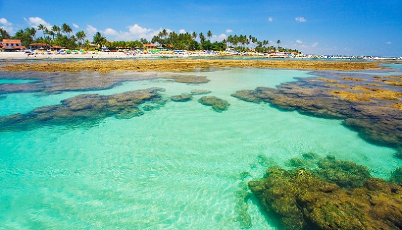

Curiosidades sobre Fernando de Noronha
Postado em 23 de julho de 2022
Esta ilha que é desejo de muitos brasileiros quando se fala em viagem, também contém muitas curiosidades que intrigam e encantam os turistas:
1. Não nascem mais bebês em Noronha.
A administração de Noronha determina que mulheres grávidas devem sair em geral no sétimo mês de gravidez para ter o filho no continente.
2. Algumas praias fecham às 18h.
Depois das 18h, muitas praias de Fernando de Noronha fecham. Isso acontece para proteger as tartarugas marinhas, que chegam às areias para colocar seus ovos logo depois do pôr-do-sol.
3. Casamento no fundo do mar!
Já aconteceu um casamento no fundo do mar, na ponta da Sapata em 1991, reunindo um excêntrico casal de mergulhadores americanos.
4. Temperatura média de 28°.
O clima em Fernando de Noronha é maravilhoso, pois apenas ocorrem chuvas no período de março a agosto. A temperatura média é de 28º.
Leia Mais
Curiosidades sobre os Lençóis Maranhenses
Postado em 23 de julho de 2022
Localizado no estado do Maranhão, o Parque Nacional dos Lençóis Maranhenses apresenta ótimas condições para as pessoas que estão em busca de contemplar a natureza e se aventurar de maneira divertida e segura. Fundado para proteger essa incrível e exclusiva herança natural, este parque cobre quase 155 mil hectares, o equivalente a cerca de 155 mil estádios de futebol.
Abrigando diversos ecossistemas, como o manguezal, a restinga e um campo de dunas, o parque tem sua localização no Cerrado, mas por apresentar forte influência da Amazônia e Caatinga, podemos encontrar comuns espécies destes 3 biomas.
Sabendo que este é o único deserto do planeta com lagoas entre as dunas de areia, é muito comum encontrarmos turistas do muito inteiro visitando os Lençóis. Além de tudo, a emoção proporcionada por este parque é especial, já que neste local vivemos experiências únicas que deverão ser guardadas para o resto da vida.
Leia Mais
Curiosidades sobre Porto de Galinhas
Postado em 23 de julho de 2022

Antigamente, o que hoje chamamos de Porto de Galinhas era conhecido como “Porto Rico”, justamente por ser uma área rica com a extração de Pau Brasil. Com o fim da escravidão no nosso país, o porto ficou muito famoso pelo contrabando de escravos, já que tinha menos visibilidade do que o porto da capital, Recife.
Quando os escravos chegavam para serem vendidos, contrabandeados, vinham escondidos embaixo de engradados de galinhas d’angola. Assim, a chegada dos escravos na beira mar era anunciada pela senha “Tem galinha nova no Porto!”. Por conta disso, Porto Rico ficou conhecida como Porto das “galinhas”.
Curioso, não? Agora que você conhece um pouco mais sobre Porto de Galinhas, chegou a hora de planejar a sua viagem e vir conhecer algumas das praias mais lindas do país pessoalmente. Porto de Galinhas te espera!
Leia Mais